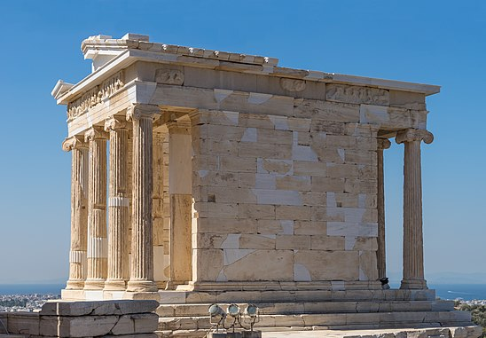

Храм Ники Аптерос
Храм Ники Аптерос (бескрылой богини победы), изначально храм Афины Ники (Афины Победительницы) (греч. Ναός Αθηνάς Νίκης, Naós Athinás Níkis) — древнегреческий мраморный храм на афинском Акрополе, расположенный на юго-западе от Пропилей и стоящий на пиргосе — небольшом выступе скалы, укреплённом мраморной подпорной стеной. Построил здание древнегреческий архитектор Калликрат примерно в 427—424 годах до н. э. Афиняне посвятили храм Афине Нике (др.-греч. Αθηνᾶ Νίκη — Афина Победительница), но ко времени Римской империи забылись как изначальное посвящение теменоса, так и история его строительства. Павсаний во II веке н. э. по народной традиции писал о «храме бескрылой богини Ники».
Пиргос к юго-западу от западного входа в Акрополь стал укреплением (Микенский бастион) в позднеэлладский III период. В первой половине VI века до н. э. на верхушке бастиона возник связанный с военными ритуалами и победами афинян культ Афины Ники — одной из ипостасей богини. Святилище разрушили персы в ходе греко-персидских войн. В середине V века до н. э. теменос восстановили. Калликрат возвёл на бастионе маленький храм (наиск), два алтаря и хранилище для подношений. В последней трети V века до н. э. раннеклассическое святилище засыпали землёй в ходе перестройки западного склона Акрополя, при строительстве Пропилей Мнесикла.
Новый амфипростильный храм Афины Ники периода высокой классики возвели из пентелийского мрамора в аттическом варианте ионического ордера. Небольшой по размерам, он имел богатое оформление — фигуративный фриз, резные орнаменты и полихромную раскраску. Отвесные стены бастиона с севера, запада и юга защищал парапет Ники, получивший название по фризу с изображением крылатых Ник, празднующих победу и приносящих жертвы своей покровительнице Афине. Основной идеей монументального ансамбля святилища являлась победа афинян под покровительством Афины, выраженная в формах мифологических, исторических и аллегорических сюжетов.
В целле храма стояла деревянная культовая статуя. Афина Ника была представлена как богиня наступившего мира: у неё отсутствовало копьё, а в руках она держала снятый с головы шлем и гранатовое яблоко.
Храм простоял практически нетронутым до конца XVII века. Незадолго до осады Акрополя 1687 года, владевшие Афинами турки-османы разобрали здание, использовав его мраморные детали при строительстве артиллерийской батареи на входе в Акрополь. Части древнегреческого памятника обнаружили в 1830-х годах, при демонтаже турецких укреплений. Храм собрали заново в ходе реставрации 1835—1845 годов. Ещё две реставрации проводились в 1935—1940 и 2000—2010 годах.
Посвящение и названия храма
Путаница в отношении посвящения храма, возникшая ещё в трудах античных писателей, встречается и в современных исследованиях. Культ богини победы Ники сформировался в раннеархаичный период на основе поэмы «Теогония» древнегреческого поэта Гесиода. Уже с архаического периода сложилась иконография Ники. В вазописи и скульптуре богиню во всех случаях без исключений изображали крылатой. К середине V века до н. э. на бастионе, где позже расположился классический храм, уже существовал культ Афины Ники, при этом «Афина Ника» не приравнивалась афинянами к богине «Нике». Эпиклесой «Афина Ника» строго обозначали Победоносную Афину (или Афину Победительницу) — один из вариантов её культа, название которого указывало на то, что богиня охраняла расположенный при входе на Акрополь бастион, стены которого издавна служили афинянам местом вывешивания военных трофеев.
В письменных источниках содержалось два варианта именований культа богини, но первым и правильным являлось «Афина Ника», впервые зафиксированное в надписи на алтаре архаического периода, позже часто использовавшееся в официальном контексте на протяжении V—IV веков до н. э., а также в эллинистический период. В текстах менее формального характера V века до н. э. богиню культа на бастионе зачастую именовали просто «Никой». Первоначально сокращённая форма эпиклесы, по всей видимости, являлась разговорной, но со временем стала общепринятой, что породило путаницу между Афиной Никой, ипостасью Афины, и богиней Никой. Ко времени Римской империи народное прозвание вытеснило подлинное именование культа.
Соответственно, храм V века до н. э. афиняне посвятили Афине Нике (Победительнице). Павсаний называл этот храм по народной традиции «храмом бескрылой богини победы» (Ники Аптерос). Объяснялось такое название тем, что культовая статуя, стоявшая в целле, изображала богиню без копья и частого атрибута её иконографии — крылатой Ники. Со временем афинский народ стал считать её непосредственно Никой и окрестил «Бескрылой Победой». Во II веке н. э., при жизни Павсания, уже забылись как история возникновения культа Афины Ники, так и история строительства её храма. Павсаний, объясняя название «Бескрылой Победы», воспроизводил исторический миф, связанный с деревянной статуей закованного в цепи бога войны Эниалия в Спарте: «Спартанцы считают, что Эниалий, будучи закован в цепи, от них никогда не уйдёт, а афиняне тоже считают, что всегда у них останется „Победа“, так как у неё нет крыльев».
Возведение Микенского бастиона
В позднеэлладский III период древние Афины занимали территорию в основном совпадавшую с холмом Акрополь. Во II тысячелетии до н. э. верхнюю площадку холма обнесли десятиметровой по высоте и шестиметровой по толщине стеной, сложенной из известняковых глыб. По преданию, строили стену пеласги, поэтому укрепление называлось пеласгической стеной. Акрополь стал мощной цитаделью, служившей населению Афин надёжной защитой. Стена частично пострадала только при двукратном вторжении персов в Аттику в 480 и 479 годах до н. э. Доступ на Акрополь устроили в двух местах — на западной и северной сторонах. На единственном пологом западном склоне укрепления имели наиболее мощный характер — здесь располагался защищённый бастионами вход.